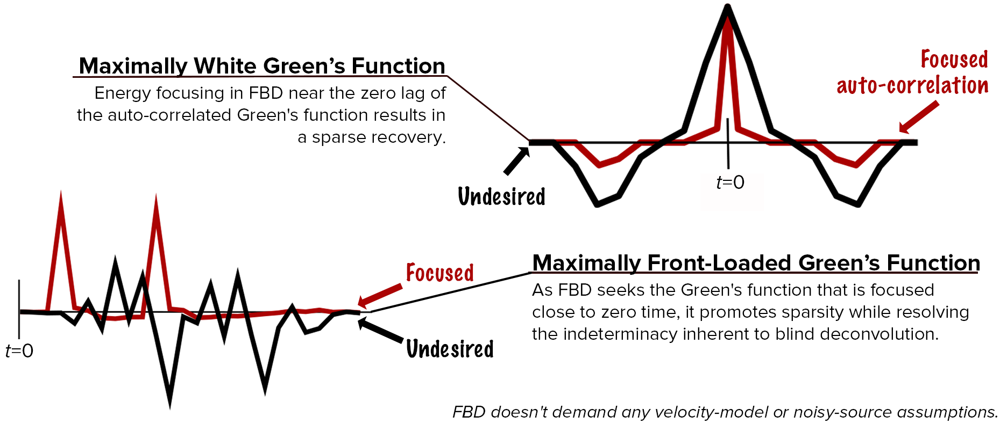
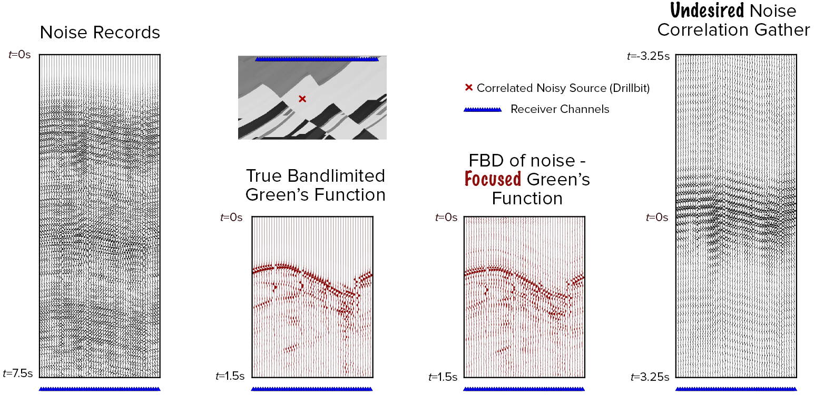

Focused Blind Deconvolution (FBD)
- This research introduces an idea (focusing) that is important to resolve the indeterminacy inherent to multichannel blind deconvolution. [paper] [slides]
- FBD is a deconvolution algorithm that extracts sparse and front-loaded impulse responses from the channel outputs, i.e., their convolutions with a single arbitrary source.
- This project also employs FBD to solve essential problems in both exploration and earthquake seismology. In this context, FBD not only outputs the subsurface Green's function, which can be directly input to imaging, but also helps us understand the noisy source characteristics.

Info-graphic of focused blind deconvolution, which is a data-driven Green's function retrieval algorithm for multi-channel seismic data of a noisy source.

Marmousi experiment, where FBD (data panel 3) outperforms the conventional Green's function retrieval from noise (data panel 1) through cross-correlation (data panel 4). When compared to the true Green's function (data panel 2), note that FBD not only recovers the direct arrival but also the scattered arrivals due to the reflectors in the medium.